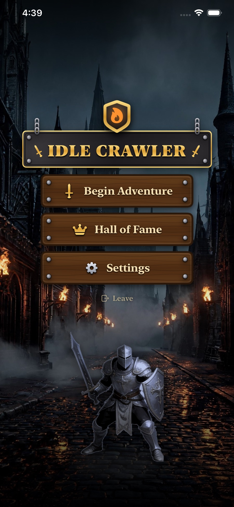
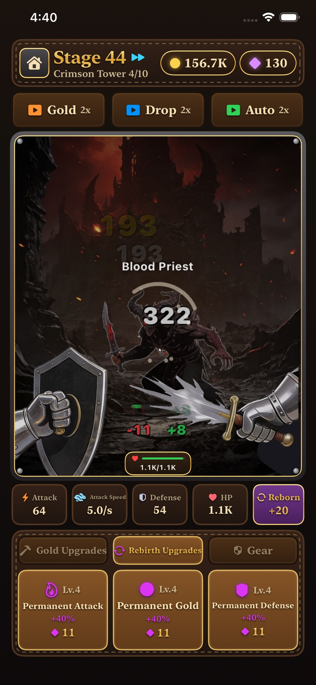
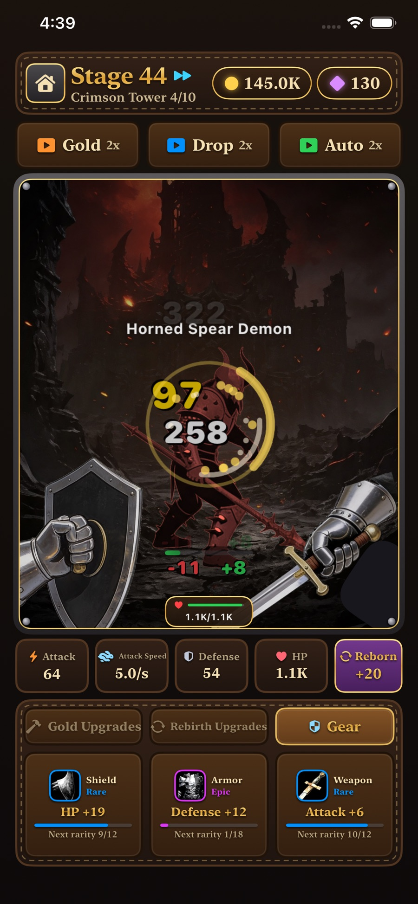

An idle dungeon crawl that keeps going without you
Get it on the App Store


Your party keeps fighting while the app is closed.
Six tiers of loot to chase.
Play in the language you like.
Free, with ads. No account needed.